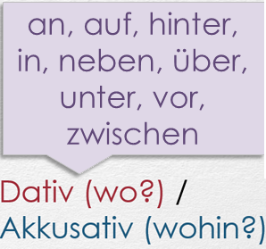

Dativ — Давательный падеж в немецком языке
- Изучая немецкий язык каждый видит в таблицах четыре падежа (der Kasus) der Nominativ, der Genitiv, der
Dativ, der Akkusativ.
- Как мы уже писали, падежная система в немецком языке отличается от русской. Во-первых, здесь всего 4 падежа (пад.): Именительный (Nominativ), Родительный (Genitiv), Дательный (Дат.) (Dativ), Винительный (Akkusativ). В этой статье мы подробно поговорим о Dativ. Дат. падеж в немецком языке выражается, как правило, при помощи артиклей.
- Дат. пад. в немецком языке отвечает на вопросы wem? (кому?), wo? (где?) wann? (когда?) и выступает в предложении в роли непрямого объекта или обстоятельства.
- ВНИМАНИЕ! Непрямой объект (Дат. пад.) в немецком языке всегда предшествует прямому объекту (Винительному пад.), если оба выражены именами существительными:
- Der Lehrer hat den Schülern keine Hausarbeit gegeben. – Учитель не задал детям домашнего задания.
- Meine Oma hat mir ein neues Handy geschenkt. – Бабушка подарила мне новый мобильный телефон.
- Die Mutter liest dem Kind ein Märchen.
- Существует также ряд глаголов, которые требуют рядом с собой Дат. пад.: gehören (принадлежать), gehorchen (повиноваться), gefallen (нравиться), vertrauen (доверять). Особое внимание нужно обратить на те глаголы, которые в русском языке употребляются с Винительным (или другим) пад., а в немецком – с Дательным: gratulieren (поздравлять кого-л.), zuhören (внимательно слушать кого-л.), zusehen (смотреть на кого-л.), ähneln (быть похожим) и др. Поэтому, изучая новый глагол, запоминайте, с какими предлогами и падежом он употребляется.
